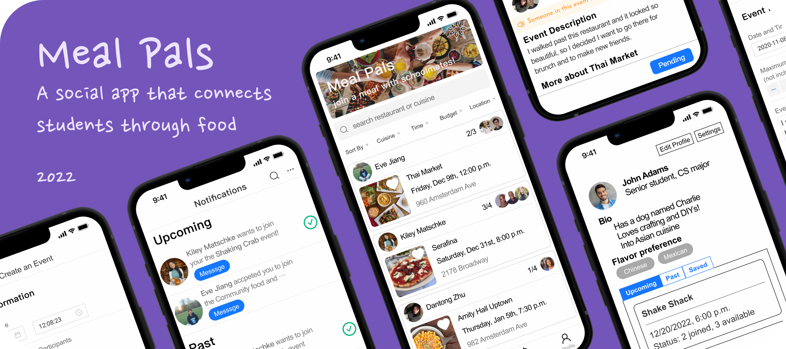
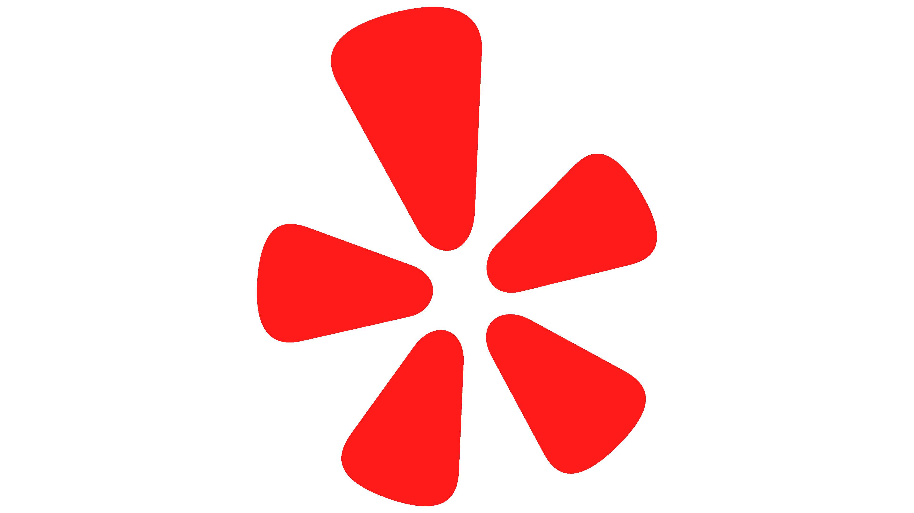
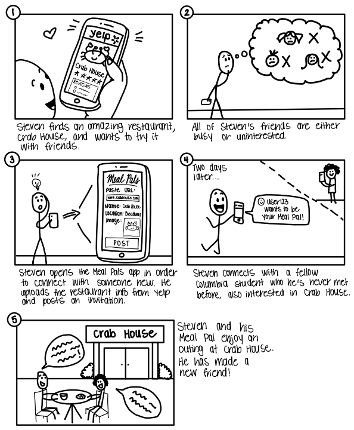
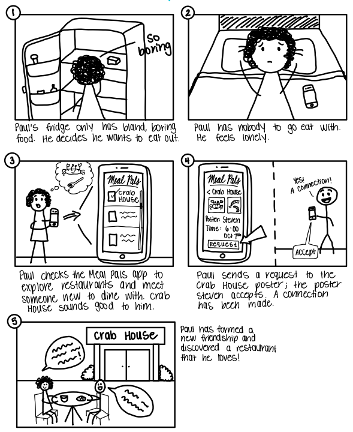
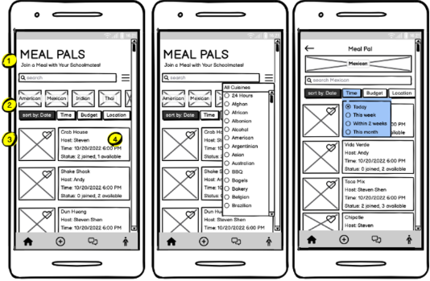
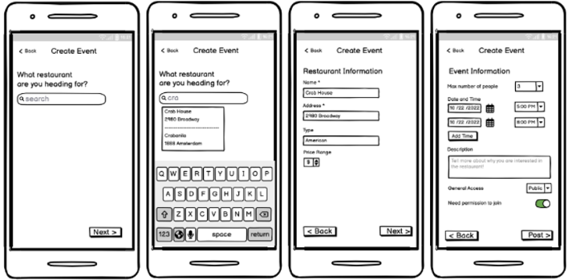
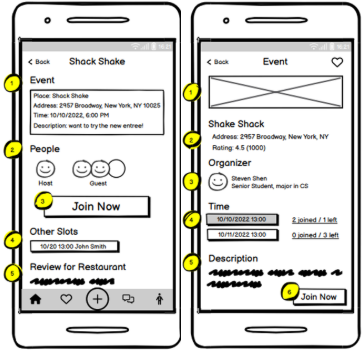
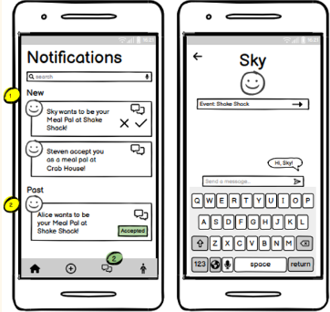
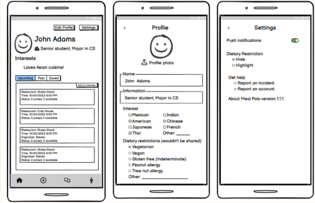

Meal
Pals
View projects in game design, data visualization, mobile applications, & more

Insights
Type
Final project for
Columbia University's
COMS-W4170:
UI Design course
Timeline
Sept - Dec 2022
Team
Kiley Matschke
Yiyi Jiang
Aparna Kumar
Dantong Zhu
Tools
HTML/CSS
JavaScript
Figma
Balsamiq
GitHub
View our hi-fi prototype code here.
About
Change can be challenging and isolating. College first-years, transfers, and international students face distinct pressure to meet new friends quickly. Given our on-campus location, our target population encompasses Columbia University students who fit such criteria.
Process
We followed a 5-checkpoint framework:
- User research
- Lo-fi prototyping
- UX & development kickoff
- Iterative development
- Final deliverable
Checkpoint One: User Research
Contextual inquiry --> interviews with two potential users
A first-year undergrad (Δ) and a first-year master's student from China (◍):
How often do you like to eat out with friends?
Δ: Biweekly
◍: Once per week
Do you like to explore new restaurants? How do you find them?
Δ: I tend to tag along to restaurants with others, but want to expand my palate.
◍: I like to explore new restaurants through friends' recommendations and Yelp.
Suppose you've found a great restaurant. What would you do next?
Δ: Look at the menu online
◍: Save it and go in the future if there is an opportunity
Do you feel it’s easy to invite a friend? If not, why?
Δ: It's not easy: I fear rejection. Knowing that someone is free would make it easier.
◍: It’s not always easy. Time and appetite are limitations.
What if none of your friends have a suitable time? How often will this happen?
Δ: Cancel plans and try again the next day. Aim for weekends to reconnect.
◍: I would wait. This doesn't happen too often.
Have you ever been to a restaurant with strangers? If so, describe your most memorable experience.
Δ: Yes, eating with a roommate for the first time! I found out they’re also a picky eater which brought us closer together.
◍: Yes, a club dinner party which was a networking event in a restaurant.
Are you interested in making new friends over a meal?
Δ: Yes because it feels impossible to make friends in class, but only if someone familiar is there. I'd prefer a big group versus 1-on-1 (too intimate) and I want to find cool restaurants.
◍: Yes, if it’s limited to Columbia students (for safety) and could find people with similar interests to discuss during the meal.
Comparative analysis --> how is our design solution unique?


We analyzed market alternatives and found that none of them satisfy the intricate balance between food and social development. Yelp lacks a direct communication channel for its users, generic messaging apps require an established friend network, and dating apps largely fixate on forming romantic connections. The most substantial problem is that safety and security are breached when dining with strangers. Our app tackles this issue since it strictly permits current Columbia University students to sign up (via UNI/email verification).
Storyboarding --> visualizing a UI solution
The Poster
You just discovered a new restaurant and want friends to join you!

The Responder
You're alone at home with a barren fridge... time to be social!

Checkpoint Two: Lo-Fi Prototyping
User study --> gauging effectiveness
81% of participants were either very or extremely interested in exploring new restaurants, and 100% prefer to dine with company at least half of the time. Yet, 86% cite difficulty finding friends to join them for a meal!





Checkpoint Three: UX + Development
Refining app flow --> improvements in visual hierarchy
Page
Previous
Current
Home page
Visual hierarchy:
- App name
- Search bar
- Event title (restaurant)
- Event details
- Filters
Visual hierarchy:
- App name
- Filter (cuisine, time, price, location)
- Event card (as a whole)
Post page
United in a single page
Separated into several pages
More time and control options
Event details page
Visual hierarchy:
- Join button
- People
- Event details
- Time options for the meal
- Review of the restaurant
Visual hierarchy:
- Restaurant photo
- Restaurant info
- Organizer
- Time options for the meal
- Event description
- Join button
Notifs page
Message and permission are separated
Message and permission are connected
Grouped by status (new, old, expired)
Confirm window
Profile page
Show following
User info and system settings are mixed
Emphasize basic info & interests
User info and system settings are separated
Checkpoint Four: Iterative Development
Med-fi Figma prototype --> advancing our Balsamiq wireframe
User study and expert feedback --> determining problem areas
Ken (IIT MDes Program)
Ken identified our biggest risks as building trust between users to ensure the event truly happens, and therefore suggested we add greater emphasis on the social aspect.
Ken's comments:
Home Page: show more “User Information” to attract users into joining an event, since the biggest difference between Meal Pals and Yelp is going to restaurants with others, instead of just going to a restaurant solo.
Post Page: the drop-down list component is more for desktop, not mobile.
Event Detail Page: having multiple time options available for an event imposes logical problems. Suppose an organizer sets up two time options for 1 event and both options garner some participants, what should the organizer do? Hold both? Pick one? You should limit this to only one time option per event and allow users to set the starting time and estimated hour of the event.
Profile Page: consider showing interests and dietary restrictions on the profile page as tags to let users learn more about each other.
Laura (UI TA)
We enlisted the advice from one of our course TAs, Laura, to gain yet another perspective about our app. We hoped to see if she had any general comments about how we could improve our implementation going from our Balsamiq implementation to this stage. To gain her insight, we visited her during one of her drop-in hour sessions and walked her through each iteration of our Balsamiq prototype in addition to some of our own concerns.
Laura's comments:
Get rid of the multiple time slots feature for those creating an event, as this leads to several confusing implications on the user’s end. Use a combination of tags for the cuisine preferences and an optional bio (rather than “interests” which is vague). This will give users varying degrees of freedom in expressing themselves, based on what suits their interests. Split up the handling of allergies versus dietary preferences (previously all lumped into the same category of dietary restrictions). For allergies, users may choose to flag or highlight restaruants that use their allergen when scrolling through their home page. For dietary preferences, users may choose to hide options that don’t match their dietary preferences when scrolling through their home page. It may be helpful for the group to have a statement such as, “Someone in this event has a nut allergy.” Don’t want to single out the users who have allergies, yet keeping the group informed may lead to a more mindful and comfortable experience for everyone involved, as other members of the group can choose to be more mindful of allergens without a long, drawn-out conversation about the topic. Even though we want to have a more social aspect, we can make the people shown more subtle For example, show the profile pic of the host and perhaps their name. It’s important to minimize the judgmental aspect that may arise in apps such as Instagram. Change the wording of the confirmation alert to make it clear that the user is requesting to join the event, rather than automatically joining it.
User Study (Volunteer)
Our goal for the evaluation was to focus on the usefulness of our product for our target population, while also refining the usability aspects to ensure a smooth flow and experience. We presented two example scenarios/stories to our user during the evaluation in order to immerse him in the ideal situation to use our app. These scenarios prompted our user to imagine himself yearning for a new restaurant and social experience, resulting in his use of our app. We ultimately hoped to determine two things: (1) Does our app fulfill our user’s needs (does he find events that interest him and does he leave our app feeling happy about the events he joined)? (2) Can our user perform the primary in-app tasks in order to satisfy these needs (i.e., create a post, search events, message others, navigate the profile page)? We evaluated these things by informing our user of the example scenarios and providing him access to our Figma flow. He shared his screen while he explored the app and simultaneously made comments about his thought process and opinions. We then left the floor open for general comments and concerns.
User study comments:
Include more info about the restaurant itself on the Event Detail page. On the Create an Event page, it's hard to tell the difference between the two “Back” buttons. Having a menu of the restaurant is important; users shouldn't have to add this themselves. The max number of participants is confusing. Is the event creator included in the total number? Make it clear this does not include the Organizer. Have an example event description filled in for users so they know what to say.
So, we've collected all of this valuable feedback... now what?
We carefully considered all aspects of our user evaluation and expert advice.
Here are the changes we implemented:
This evaluation taught us that, after some minute modifications, our design solution satisfies our goals of usefulness and usability. We strove to meet our users where they already are and make their experience with our UI as streamline and self-explanatory as possible.
Checkpoint Five: Final Deliverables
Project video --> a summary of our journey
Code implementation & demo --> translation into HTML & CSS
Special thanks to my team members: Yiyi Jiang, Dantong Zhu, and Aparna Kumar